回收器Recycler
一、介绍
回收器和对象池
回收器，就是来回收对象的。对象池，就是来存储对象复用的。为了跟对象池配合，使得对象池只是作为一个获取对象的实体，只要接受对象创建器即可，其他的不用管，而且将对象池如何存取的实现剥离到了回收器里，如果要改变具体存取方案，只要更换回收器即可，其实也是一种代理，设计很灵活。
ObjectPool
对象池，netty自己设计了一套对象池和回收器的机制，可以多线程回收，尽量避免线程竞争问题。
get获得对象
是个抽象方法，就是获取T类型的对象。
1public abstract T get();Handle回收处理器接口
处理器。里面有个回收方法，就是将要回收的对象传进去。
41public interface Handle<T> {2 //回收3 void recycle(T self);4}ObjectCreator
对象创建接口，有个传入处理器的创建方法。通过对象创建接口和处理器关联，以便于创建的的对象内部可以调用处理器的方法，用来回收对象。
41public interface ObjectCreator<T> {2 //创建一个新的T类型的对象，传入处理器作为参数3 T newObject(Handle<T> handle);4}RecyclerObjectPool
回收器对象池，实现了get方法，内部就是通过一个回收器来获得。同时构造方法传入一个对象创建实例。
x1private static final class RecyclerObjectPool<T> extends ObjectPool<T> {2 private final Recycler<T> recycler;//回收器3
4 RecyclerObjectPool(final ObjectCreator<T> creator) {5 recycler = new Recycler<T>() {6 7 protected T newObject(Handle<T> handle) {8 return creator.newObject(handle);9 }10 };11 }12
13 14 public T get() {15 return recycler.get();16 }17}newPool
提供给我们使用的方法，只需要传入一个对象创建器即可。
31public static <T> ObjectPool<T> newPool(final ObjectCreator<T> creator) {2 return new RecyclerObjectPool<T>(ObjectUtil.checkNotNull(creator, "creator"));3}创建对象池
创建对象池很方便，比如下面的对象池，仅仅需要实现一个对象的创建方法即可，其他不用管。
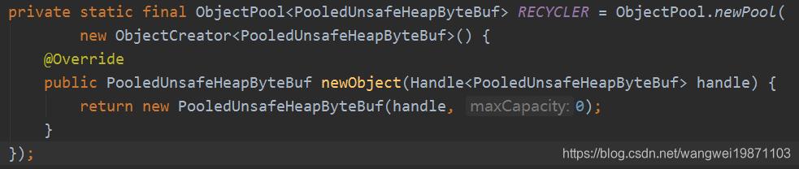
使用的时候只要：
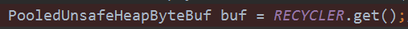
回收的时候有个处理器Handle，这个交给回收器去创建了，不用管：
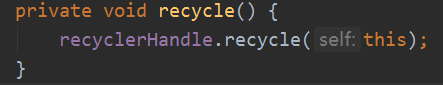
Recycler介绍
每个线程独立存取数据
多线程中每个线程都可能会有创建对象，释放对象，当他们创建的时候，首先会从当前线程本地变量中获取，这样做避免了多线程之间的竞争问题。每个线程都拥有一个特殊的栈Stack，一般情况下就是从Stack中获取，回收也是放这个里面回收，Stack内部是一个数组，用索引记录，存取非常快。
11private static final FastThreadLocal<Stack<T>> threadLocal = new FastThreadLocal<Stack<T>>(); 另一个就是一个Map，具体类型是WeakHashMap<Stack<?>, WeakOrderQueue>，他的键是弱引用，而且他是以键的引用地址来判断是不是同一个键。他将Stack和WeakOrderQueue对应起来了。
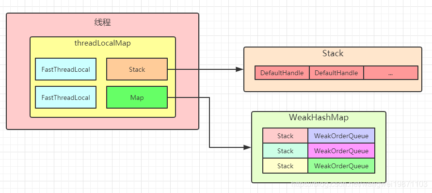
那什么是WeakOrderQueue呢，简单来说就是一个队列，这个队列里面也可以放回收的对象，前面不是已经有了Stack了么，干嘛要这个呢。因为涉及到多线程，为了不出现多线程同时去存取操作Stack而产生的竞争情况，就区分了当前线程是不是Stack的拥有线程，如果是，就直接放回到Stack中，如果不是，就放入对应的WeakOrderQueue中，前面说了Stack和WeakOrderQueue有对应关系。而且多个线程中都可能有同一个Stack的不同WeakOrderQueue。他们之间是用单链表连起来的。大致关系就像这样：
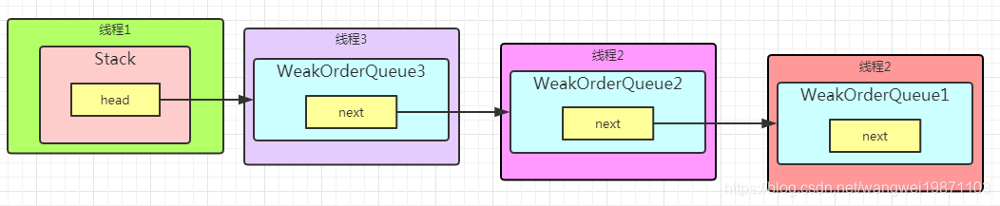
WeakOrderQueue大致结构
而WeakOrderQueue内部使用Link类型的链表连接起来的，Link内部也是数组。

Stack大致结构
其实结构都还挺清晰的，主要的还是数组，单链表。
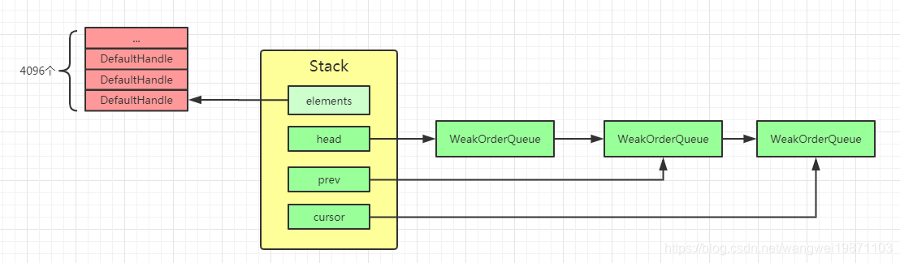
DefaultHandle
这个就是处理器，实现了Handle接口，主要是处理回收的，主要的方法就是recycle，主要的代码贴出来了，其实就是入栈：
71public void recycle(Object object) {3...4 Stack<?> stack = this.stack;5...6 stack.push(this);//入栈7}一些基本操作
回收操作
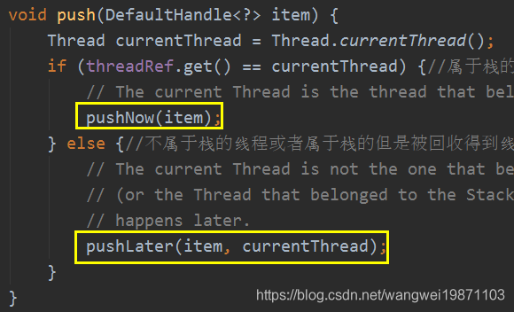
回收操作分成当前线程是否是Stack所属线程，如果是，就放入elements数组中。否则就放入另一个线程的本地变量WeakHashMap中，以创建<Stack<?>, WeakOrderQueue>键值对，主要还是创建WeakOrderQueue，然后将WeakOrderQueue加入Stack的单链表中，这样使得多个其他线程的WeakOrderQueue和所属线程的Stack有关联。
WeakOrderQueue里面创建Link链接对象，将回收对象放入Link对象的elements数组中。而且数组的操作全部使用额外的索引，只需要移动索引进行操作，不需要因为增加删除元素而移动数组元素，所以性能非常高，而且无论Stack还是WeakOrderQueue内部还有间隔回收的限制，不是说放进来就要的，有一定个数间隔的，默认间隔是8，也就是除了第一次直接回收，后面每来9个，回收1个，比如来了10个，只有第1个和第10个被回收，中间8个全部不管，等着GC去回收了。
Stack的：
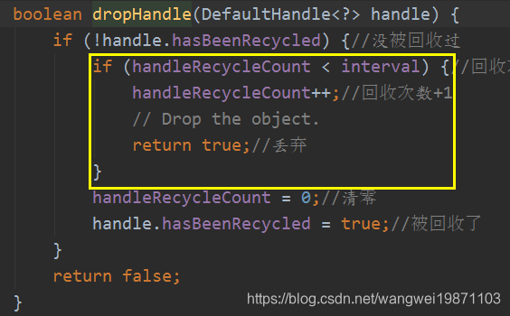
WeakOrderQueue的：
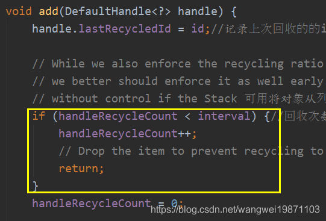
获取操作：这个是单线程的操作，每个线程都会从自己的线程本地变量
Stack中获取，如果elements数组中有，就从这里取，如果没有，就尝试从Stack连接的WeakOrderQueue取，每次取一个Link，但是可能就回收2个，因为回收有间隔，就算一个Link中的16个对象都拿出来，也就2个能被回收。
为什么要用WeakOrderQueue而不是直接存到Stack？
如果将对象直接存到不是所属线程的
Stack的话，就可能会出现一个线程不停的创建对象，一个线程不停的回收对象，没有任何复用的地方，因为两个Stack不同，所以中间使用了WeakOrderQueue，暂时存这里，所属Stack没有的时候，从其他线程中关联的WeakOrderQueue中拿。
二、Recycler源码
他是个抽象类，有个抽象方法，创建对象，也就是说在对象池没有对象的时候得能创建对象：
他与对象池配合使用，比如ObjectPool中的RecyclerObjectPool：
171private static final class RecyclerObjectPool<T> extends ObjectPool<T> {2 private final Recycler<T> recycler;//回收器3
4 RecyclerObjectPool(final ObjectCreator<T> creator) {5 recycler = new Recycler<T>() {6 7 protected T newObject(Handle<T> handle) {8 return creator.newObject(handle);9 }10 };11 }12
13 14 public T get() {15 return recycler.get();16 }17} 将具体如果创建对象交给了ObjectCreator接口:
31public interface ObjectCreator<T> {2 T newObject(Handle<T> handle);3}并且封装了一个对象池的静态方法，只要传入创建器即可：
31public static <T> ObjectPool<T> newPool(final ObjectCreator<T> creator) {2 return new RecyclerObjectPool<T>(ObjectUtil.checkNotNull(creator, "creator"));3} 比如我们的PooledHeapByteBuf的对象池，只要返回相应的对象就好：
71private static final ObjectPool<PooledHeapByteBuf> RECYCLER = ObjectPool.newPool(2 new ObjectCreator<PooledHeapByteBuf>() {3 4 public PooledHeapByteBuf newObject(Handle<PooledHeapByteBuf> handle) {5 return new PooledHeapByteBuf(handle, 0);6 }7});配置属性
181//id生成器2private static final AtomicInteger ID_GENERATOR = new AtomicInteger(Integer.MIN_VALUE);3//获取所属线程的id4private static final int OWN_THREAD_ID = ID_GENERATOR.getAndIncrement();5// Use 4k instances as default.6private static final int DEFAULT_INITIAL_MAX_CAPACITY_PER_THREAD = 4 * 1024; 7//每个线程本地变量Stack最大容量,默认40968private static final int DEFAULT_MAX_CAPACITY_PER_THREAD;9//Stack初始化容量，默认25610private static final int INITIAL_CAPACITY;11//最大共享容量因子，影响WeakOrderQueue的容量，默认212private static final int MAX_SHARED_CAPACITY_FACTOR;13//每个线程本地变量WeakHashMap的最大键值对个数，默认CPU核心数x214private static final int MAX_DELAYED_QUEUES_PER_THREAD;15//链接中的数组容量，默认1616private static final int LINK_CAPACITY;17//回收间隔，默认818private static final int RATIO;使用Demo
创建一个回收器RECYCLER，一个测试类MyBuff ，然后就是获取和回收。
271public class RecycleTest {2 //创建回收器3 private static final Recycler<MyBuff> RECYCLER = new Recycler<MyBuff>() {4 5 protected MyBuff newObject(Handle<MyBuff> handle) {6 return new MyBuff(handle);7 }8 };9
10 private static class MyBuff {11 private final Recycler.Handle<MyBuff> handle;12
13 public MyBuff(Recycler.Handle<MyBuff> handle) {14 this.handle = handle;15 }16
17 public void recycle() {18 handle.recycle(this);19 }20 }21
22
23 public static void main(String[] args) {24 MyBuff myBuff = RECYCLER.get();25 myBuff.recycle();26 }27}Recycler初始化
DELAYED_RECYCLED
先看一些重要的静态变量的初始化，DELAYED_RECYCLED是一个线程本地变量，里面存放的是一个map，具体类型是WeakHashMap<Stack<?>, WeakOrderQueue>，map里面放着键值对，每个回收器回收了其他线程创建的对象时，就会放入对象所对应的Stack在WeakHashMap中的WeakOrderQueue里。
91private static final FastThreadLocal<Map<Stack<?>, WeakOrderQueue>> DELAYED_RECYCLED =2 new FastThreadLocal<Map<Stack<?>, WeakOrderQueue>>() {3 // 默认初始化4 5 protected Map<Stack<?>, WeakOrderQueue> initialValue() {6 //弱键回收，键如果只有弱引用，可以被GC回收，然后将整个键值对回收7 return new WeakHashMap<Stack<?>, WeakOrderQueue>();8 }9};threadLocal
另外一个线程本地变量就是放Stack的，有初始化，也有安全删除的方法：
221private final FastThreadLocal<Stack<T>> threadLocal = new FastThreadLocal<Stack<T>>() {2 3 protected Stack<T> initialValue() {4 return new Stack<T>(Recycler.this, 5 Thread.currentThread(), 6 maxCapacityPerThread, 7 maxSharedCapacityFactor,8 interval, 9 maxDelayedQueuesPerThread);10 }11 12 //安全删除Stack键值对13 14 protected void onRemoval(Stack<T> value) {15 // Let us remove the WeakOrderQueue from the WeakHashMap directly if its safe to remove some overhead16 if (value.threadRef.get() == Thread.currentThread()) {17 if (DELAYED_RECYCLED.isSet()) {18 DELAYED_RECYCLED.get().remove(value);19 }20 }21 }22 };构造器
Recycler构造器
131protected Recycler(int maxCapacityPerThread, int maxSharedCapacityFactor,2 int ratio, int maxDelayedQueuesPerThread) {3 interval = safeFindNextPositivePowerOfTwo(ratio);4 if (maxCapacityPerThread <= 0) {5 this.maxCapacityPerThread = 0;6 this.maxSharedCapacityFactor = 1;7 this.maxDelayedQueuesPerThread = 0;8 } else {9 this.maxCapacityPerThread = maxCapacityPerThread;10 this.maxSharedCapacityFactor = max(1, maxSharedCapacityFactor);11 this.maxDelayedQueuesPerThread = max(0, maxDelayedQueuesPerThread);12 }13}Stack构造方法：一些参数的设置。
111Stack(Recycler<T> parent, Thread thread, int maxCapacity, int maxSharedCapacityFactor,2 int interval, int maxDelayedQueues) {3 this.parent = parent;//回收器4 threadRef = new WeakReference<Thread>(thread);//所属线程的弱引用5 this.maxCapacity = maxCapacity;//最大容量，默认40966 availableSharedCapacity = new AtomicInteger(max(maxCapacity / maxSharedCapacityFactor, LINK_CAPACITY));//共享容量，也就是其他线程中的WeakOrderQueue中的最大容量的总和 20487 elements = new DefaultHandle[min(INITIAL_CAPACITY, maxCapacity)];//存放对象的数组，默认256大小8 this.interval = interval;//回收间隔9 handleRecycleCount = interval; // 间隔计数器，第一个会被回收10 this.maxDelayedQueues = maxDelayedQueues;//关联的WeakOrderQueue最大个数，默认1611}处理器回收recycle
161// io.netty.util.Recycler.DefaultHandle.java2
3public void recycle(Object object) {5 if (object != value) {6 throw new IllegalArgumentException("object does not belong to handle");7 }8
9 Stack<?> stack = this.stack;10 if (lastRecycledId != recycleId || stack == null) {11 throw new IllegalStateException("recycled already");12 }13
14 // ---往下看---15 stack.push(this);16}stack.push
141// Recycler.Stack#push2
3void push(DefaultHandle<?> item) {4 Thread currentThread = Thread.currentThread();5 if (threadRef.get() == currentThread) {6 // The current Thread is the thread that belongs to the Stack, we can try to push the object now.7 pushNow(item);8 } else {9 // The current Thread is not the one that belongs to the Stack10 // (or the Thread that belonged to the Stack was collected already), we need to signal that the push11 // happens later.12 pushLater(item, currentThread);13 }14}pushNow
如果当前线程是属于Stack的所属线程，就调用这个方法，直接将对象放入elements的数组中。
这个过程还是比较好理解的，首先判断是否回收过，然后记录回收信息，判断回收的数量有没超过限制，或者是不是丢弃，根据回收间隔。然后看elements数组是否需要扩容，每次扩容到两倍，但是不超过最大容量默认4096。最后把对象放入指定索引的位置。
231private void pushNow(DefaultHandle<?> item) {2 //尝试过回收3 if ((item.recycleId | item.lastRecycledId) != 0) {4 throw new IllegalStateException("recycled already");5 }6 //记录定义的线程ID7 item.recycleId = item.lastRecycledId = OWN_THREAD_ID;8
9 //已有对象数量10 int size = this.size; // 间隔回收11 if (size >= maxCapacity || dropHandle(item)) {12 return;13 }14 //要扩容了 每次x2 直到maxCapacity15 if (size == elements.length) {16 elements = Arrays.copyOf(elements, min(size << 1, maxCapacity));17 }18
19 //放入数组中20 elements[size] = item;21 //个数+122 this.size = size + 1;23} dropHandle，这个就是间隔回收，两次回收之间隔8个对象。
181boolean dropHandle(DefaultHandle<?> handle) {2 //没被回收过3 if (!handle.hasBeenRecycled) {4 //回收次数小于回收阈值5 if (handleRecycleCount < interval) {6 //回收次数+17 handleRecycleCount++;8 //丢弃9 // Drop the object.10 return true;11 }12 //清零13 handleRecycleCount = 0;14 //被回收了15 handle.hasBeenRecycled = true;16 }17 return false;18} 这里容易无解，其实应该是除了第一个直接被回收外，后面每9个回收1个。图示根据回收过来的序号排序从0开始，绿色表示能被回收，红色表示被丢弃
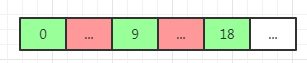
pushLater
当前线程不是Stack的所属线程，这种情况下就是另一个线程来回收，看源码吧。
341private void pushLater(DefaultHandle<?> item, Thread thread) {2 ...3 //每个线程都会有自己的map4 Map<Stack<?>, WeakOrderQueue> delayedRecycled = DELAYED_RECYCLED.get();5 //获取对应的WeakOrderQueue6 WeakOrderQueue queue = delayedRecycled.get(this);7 //不存在尝试创建一个放入map8 if (queue == null) {9 //数量大于阈值 放一个假WeakOrderQueue，丢弃对象10 if (delayedRecycled.size() >= maxDelayedQueues) {11 delayedRecycled.put(this, WeakOrderQueue.DUMMY);12 return;13 }14
15 // ---往下看a---16 //创建一个队列，如果要分配的容量(16)不够的话就丢弃对象17 if ((queue = newWeakOrderQueue(thread)) == null) {18 // drop object19 return;20 }21 //放入map里22 delayedRecycled.put(this, queue);23 //如果是假的，就丢弃24 } else if (queue == WeakOrderQueue.DUMMY) {25 // drop object26 return;27 }28
29 // ---往下看b---30 //放入WeakOrderQueue31 queue.add(item);32 }33
34static final WeakOrderQueue DUMMY = new WeakOrderQueue(); 首先我们会获取线程本地变量WeakHashMap<Stack<?>, WeakOrderQueue>，然后根据Stack获取WeakOrderQueue 。
如果获取不到，说明还没有这个
Stack关联的WeakOrderQueue被创建。尝试创建，但是如果WeakHashMap键值对数量超过限制了，就放一个假的WeakOrderQueue，其实就是一个空的队列，DUMMY。否则的话就尝试创建一个，如果还有分配的容量的话，就创建，并和Stack一起放入WeakHashMap中，不行的话就丢弃对象。如果获取的是
DUMMY的话，说明WeakHashMap放满了，就丢弃。如果获取到了且不是
DUMMY就尝试放队列里。
a. newWeakOrderQueue创建队列
201private WeakOrderQueue newWeakOrderQueue(Thread thread) {2 return WeakOrderQueue.newQueue(this, thread);3}4
5static WeakOrderQueue newQueue(Stack<?> stack, Thread thread) {6 // ---往下看1---7 // 是否可分配链接8 if (!Head.reserveSpaceForLink(stack.availableSharedCapacity)) {9 //分配失败10 return null;11 }12 // ---往下看2---13 final WeakOrderQueue queue = new WeakOrderQueue(stack, thread);14
15 // ---往下看3---16 //头插法，新的队列插到头部17 stack.setHead(queue);18
19 return queue;20} Head链接管理者，首先先介绍下Head类，他管理着里面所有的链接Link的创建和回收。内部还有一个Link的连接，其实是单链表的表头，所有的Link都会被串起来，还有一个容量availableSharedCapacity，后续的分配和回收都会用到。
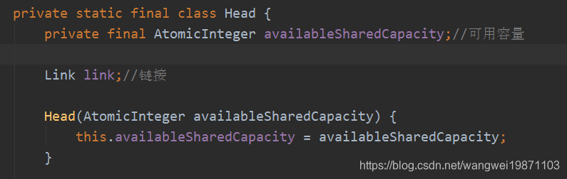
Link属性，本身就是原子对象，可以计数，这个在后面放入对象的时候会用到。这个里面其实就是一个数组，用来存对象，默认容量是16，还有一个next指向下一个，至于readIndex就是获取对象的时候用，这个跟netty自定义的ByteBuf的读索引类似，表示下一个可获取对象的索引。
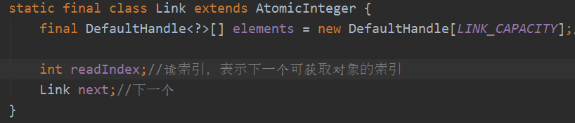
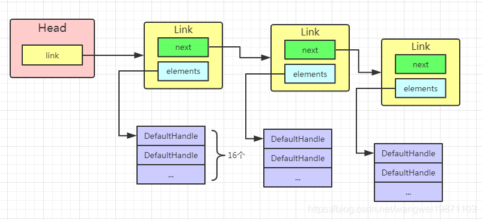
Head.reserveSpaceForLink为Link申请空间，传进来的参数是stack.availableSharedCapacity也就是2048，说明可以申请的容量是跟这个参数相关的，最多2048个。也就是说每个Stack在其他线程中的回收对象最多是2048个。每次分配16个，如果容量小于16个了，就不分配了，因此可能导致WeakOrderQueue创建失败，丢弃对象。
131static boolean reserveSpaceForLink(AtomicInteger availableSharedCapacity) {2 for (;;) {3 int available = availableSharedCapacity.get();4 //可分配容量小于16 分配失败5 if (available < LINK_CAPACITY) {6 return false;7 }8 if (availableSharedCapacity.compareAndSet(available, available - LINK_CAPACITY)) {9 //分配成功10 return true; 11 }12 }13}WeakOrderQueue构造器，创建一个链接
Link，然后给创建一个Head，并传入availableSharedCapacity引用，根据这个availableSharedCapacity来进行后续Link的分配和回收的。然后还有个队尾的引用，同时也存在回收间隔，跟Stack一样，默认是8。
111private WeakOrderQueue(Stack<?> stack, Thread thread) {2 super(thread);3 //创建链接，分配LINK_CAPACITY个DefaultHandle类型的数组4 tail = new Link();5
6 head = new Head(stack.availableSharedCapacity);7 head.link = tail;8 interval = stack.interval;9 // Start at interval so the first one will be recycled.10 handleRecycleCount = interval; 11}stack.setHead(queue);设置头节点，因为需要跟
Stack有关联，所以会跟Stack的head结点形成一个单链表，头插法，而且这里用方法同步，主要是多线程可能同时回收，所以需要同步。
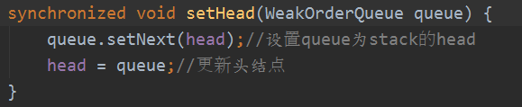
b. queue.add：加入队列，这个也是间隔回收的，从队尾的Link 开始，看是否满了，如果满了就重新创建一个Link加入链表，然后在elements对应索引位置放入对象，Link本身就是AtomicInteger，可以进行索引的改变。
371void add(DefaultHandle<?> handle) {2 //记录上次回收的线程id3 handle.lastRecycledId = id;4
5 //回收次数小于间隔，就丢弃对象，为了不让队列增长过快6 if (handleRecycleCount < interval) {7 handleRecycleCount++;8
9 return;10 }11 handleRecycleCount = 0;12
13 Link tail = this.tail;14 int writeIndex;15 //如果超过链接容量限制了16 if ((writeIndex = tail.get()) == LINK_CAPACITY) {17 // ---往下看1---18 //创建新的链接，如果创建不成功，就返回null，丢弃对象19 Link link = head.newLink();20 if (link == null) {21 // Drop it.22 return;23 }24
25 //加入链表26 this.tail = tail = tail.next = link;27
28 writeIndex = tail.get();29 }30 //放入对象31 tail.elements[writeIndex] = handle;32 //放进queue里就没有栈了33 handle.stack = null;34
35 //不需要立即可见，这里都是单线程操作36 tail.lazySet(writeIndex + 1);37}head.newLink();其实就是前面讲过的申请空间，创建
Link。如果成功就创建一个链接返回，否则就返回null。
31Link newLink() {2 return reserveSpaceForLink(availableSharedCapacity) ? new Link() : null;3}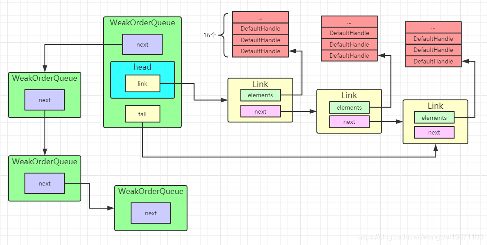
获取对象
RECYCLER.get()
251public final T get() {2 //如果不启用，就给一个空实现处理器3 if (maxCapacityPerThread == 0) {4 return newObject((Handle<T>) NOOP_HANDLE);5 }6 //获取栈，不存在就初始化一个7 Stack<T> stack = threadLocal.get();8 // ---看5.1.1步---9 //弹出一个处理器10 DefaultHandle<T> handle = stack.pop();11 //处理器不存在就创建一个，再创建一个值12 if (handle == null) {13 handle = stack.newHandle();14 handle.value = newObject(handle);15 }16 //返回值17 return (T) handle.value;18}19
20private static final Handle NOOP_HANDLE = new Handle() {21 22 public void recycle(Object object) {23 // NOOP24 }25}; 首先通过线程本地变量获取Stack，这里前面讲过FastThreadLocal的处理了，如果没获取到，就会初始化一个，也就是：
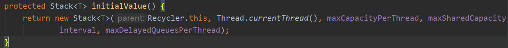
stack.pop()
获取Stack后，就开始调用pop来获取。
341DefaultHandle<T> pop() {2 int size = this.size;3 //没有了就清理尝试从队列中转过来4 if (size == 0) {5 //清理队列失败6 if (!scavenge()) {7 return null;8 }9 //设置个数10 size = this.size;11 //如果还是0的话就返回null12 if (size <= 0) {13 // double check, avoid races14 return null;15 }16 }17 18 //个数-119 size --;20 //获取对象21 DefaultHandle ret = elements[size];22 //清空对象23 elements[size] = null;24
25 //更新数量26 this.size = size;27
28 if (ret.lastRecycledId != ret.recycleId) {29 throw new IllegalStateException("recycled multiple times");30 }31 ret.recycleId = 0;32 ret.lastRecycledId = 0;33 return ret;34} Stack有对象的情况，就直接将size减1，size其实就是一个索引，又能表示数量，默认是0，放入一个加1，取出一个减1，这样就不需要去移动数组，效率高，然后按照size索引取出elements中的DefaultHandle对象，设置对象的回收属性，返回 。这个是比较简单的情况。
Stack没有对象的情况，调用scavenge进行清理。
121private boolean scavenge() {2 //有清理一些链接了3 // continue an existing scavenge, if any4 if (scavengeSome()) {5 return true;6 }7
8 // 没清理的就重新设置9 prev = null;10 cursor = head;11 return false;12}scavengeSome清理一部分。
671private boolean scavengeSome() {2 WeakOrderQueue prev;3 WeakOrderQueue cursor = this.cursor;4 //游标为null5 if (cursor == null) {6 prev = null;7 //游标指向头结点8 cursor = head;9 if (cursor == null) {10 return false;11 }12 } else {13 prev = this.prev;14 }15
16 boolean success = false;17 do {18 // ---往下看1---19 //每次转移一个链接的量，由于有间隔，一般就只有2个转移20 if (cursor.transfer(this)) {21 //转移成功22 success = true;23 break;24 }25 //只有上一个转移完了，才会获取下一个队列26 WeakOrderQueue next = cursor.getNext();27 28 //关联线程被回收为null了29 if (cursor.get() == null) {30
31 // ---往下看2---32 //还有对象33 if (cursor.hasFinalData()) {34 for (;;) {35 //把队列中的所有链接全部转移完为止36 if (cursor.transfer(this)) {37 success = true;38 } else {39 break;40 }41 }42 }43
44 //如果cursor的前一个队列prev存在45 if (prev != null) {46 // ---往下看3---47 //释放cursor结点空间48 cursor.reclaimAllSpaceAndUnlink();49 //从单链表中删除cursor结点，prev的next指向cursor的下一个，第一个head是不释放的50 prev.setNext(next);51 }52 } else {53 //prev保存前一个，用来链接删除结点的时候链接下一个结点，保持不断链54 prev = cursor;55 }56
57 //游标指向下一个队列58 cursor = next;59
60 //下一个队列不为空，且没有成功转移过61 } while (cursor != null && !success);62
63 this.prev = prev;64 //设置游标65 this.cursor = cursor;66 return success;67}
如果以前没有清理过或者没有要清理的了，
cursor为null，然后尝试开始从head清理。如果head也为null，说明没有WeakOrderQueue，直接返回false清理失败，否则cursor就是head，即可以从head开始清理。如果以前有清理过，获取到
prev，即上一个WeakOrderQueue，便于后面删除结点保持链表不断链。然后开始尝试将
cursor中的对象转移到Stack中。
如果转移成功直接返回
true。如果发现
cursor的引用线程不存在了，如果cursor还有有对象的话，全部转移到Stack中，并设置转移成功标志true。如果prev存在的话，就把cursor空间释放，并且从链表中删除。如果
cursor的引用线程还存在，就把prev指向cursor。最后cursor指向下一个WeakOrderQueue。如果发现
cursor不为空，且没有转移成功过，就再进行转移，直到cursor为空，或者转移成功为止。最后设置prev和cursor。简单的图示就是这样：
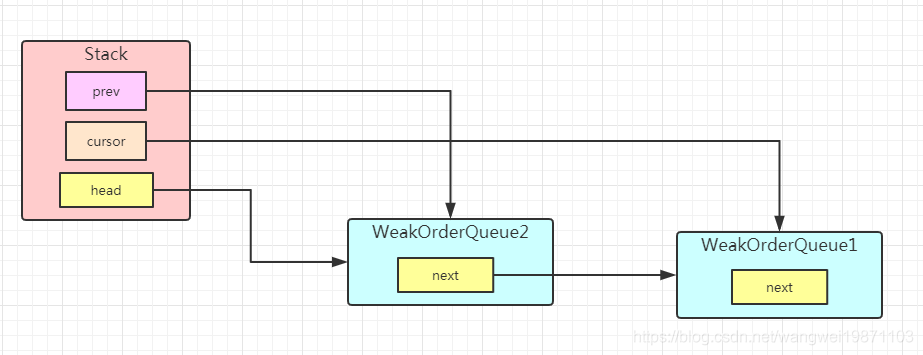
WeakOrderQueue的transfer转移。
概述：简单的来说就是从
WeakOrderQueue的head中的链接link开始遍历，把link中的element数组的所有对象转移给Stack的element数组。其中readIndex表示下一个能转移的数组索引，如果readIndex=LINK_CAPACITY即表示转移完了。
如果发现
link已经转移完，又是最后一个link，就直接返回false，否则就把他的空间释放了，head的link指向下一个。差不多就是这个样子：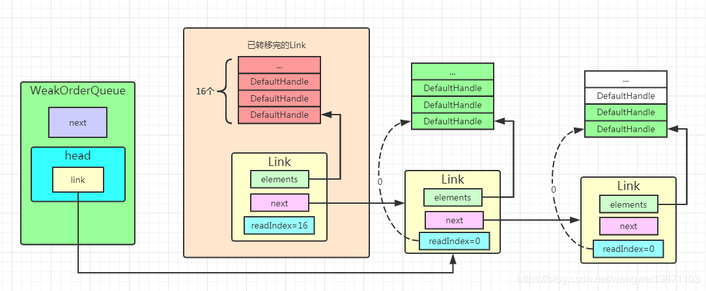
之后还会判断一次，新获取的下一个
Link是否有可以转移的对象，如果没有就直接返回false了。如果还能转移，就计算转换后的
Stack中预期有多少对象，如果elements不够放的话就进行扩容。如果扩容了还不行的话，说明满了，就返回false了。如果可以放的话，就开始转移，从
Link的elements转移到Stack的elements，也不是每一个都会转过去，这里也有个回收间隔，也是间隔8个，也即所有16个对象只能转2个过去， 其实就是回收的比较少，大部分都是丢弃的 。如果这个Link所有对象都转移完了，且他的下一个不为null，就将head的link指向下一个。最后判断是否有对象转移，如果有就给
Stack设置新size并返回true，否则就false， 因为转移有间隔，不一定能有对象转移过去的 。961boolean transfer(Stack<?> dst) {2//获取头链接3Link head = this.head.link;4//没有了5if (head == null) {6return false;7}8//链接中的对象全部转移了10if (head.readIndex == LINK_CAPACITY) {11//又是最后一个了,返回失败12if (head.next == null) {13return false;14}15//到下一个16head = head.next;17// ---往下看1---19//头结点指向新的链接20this.head.relink(head);21}22//可获取的开始索引24final int srcStart = head.readIndex;25//可以获取的最后索引26int srcEnd = head.get();27//还有多少个可获取的28final int srcSize = srcEnd - srcStart;29if (srcSize == 0) {30return false;31}32//栈中有多少个对象34final int dstSize = dst.size;35//期望容量是栈里的个数+队列里的一个链接中的可获取个数36final int expectedCapacity = dstSize + srcSize;37//如果大于栈可容纳的个数39if (expectedCapacity > dst.elements.length) {40// ---往下看2---41//扩容42final int actualCapacity = dst.increaseCapacity(expectedCapacity);43//再次获取最后索引44srcEnd = min(srcStart + actualCapacity - dstSize, srcEnd);45}46//还可以转移48if (srcStart != srcEnd) {49//链接中的对象数组50final DefaultHandle[] srcElems = head.elements;51//栈中的对象数组52final DefaultHandle[] dstElems = dst.elements;53int newDstSize = dstSize;54//从头到尾遍历55for (int i = srcStart; i < srcEnd; i++) {56DefaultHandle<?> element = srcElems[i];57//检查有没被回收过，没有就是058if (element.recycleId == 0) {59element.recycleId = element.lastRecycledId;60} else if (element.recycleId != element.lastRecycledId) {61throw new IllegalStateException("recycled already");62}63//清空引用，便于GC64srcElems[i] = null;65//如果不符合条件丢弃对象，并继续67if (dst.dropHandle(element)) {68// Drop the object.69continue;70}71//把栈设置回来，下次会从栈里里获取72element.stack = dst;73//放入栈的数组里74dstElems[newDstSize ++] = element;75}76//如果这个链接是满的，而且下一个不为空，那就把这个链接给回收了，单链表删除78if (srcEnd == LINK_CAPACITY && head.next != null) {79// Add capacity back as the Link is GCed.80this.head.relink(head.next);81}82//设置获取完毕84head.readIndex = srcEnd;85//如果没有对象获取，就返回失败86if (dst.size == newDstSize) {87return false;88}89//有就设置个数,返回成功90dst.size = newDstSize;91return true;92} else {93// The destination stack is full already.94return false;//栈满了95}96}
relink：重新连接到下一个。
91void relink(Link link) {2reclaimSpace(LINK_CAPACITY);//回收3this.link = link;//链接指向link4}5//回收空间7private void reclaimSpace(int space) {8availableSharedCapacity.addAndGet(space);9}
increaseCapacity：扩容两倍，不超过最大限制，把数组元素都复制过去。
141int increaseCapacity(int expectedCapacity) {2int newCapacity = elements.length;3int maxCapacity = this.maxCapacity;4do {5newCapacity <<= 1;6} while (newCapacity < expectedCapacity && newCapacity < maxCapacity);7newCapacity = min(newCapacity, maxCapacity);9if (newCapacity != elements.length) {10elements = Arrays.copyOf(elements, newCapacity);11}12return newCapacity;14}
hasFinalData
是否还有数据，这个很简单，即最后一个
Link是否还有可以转移的。
31boolean hasFinalData() {2 return tail.readIndex != tail.get();3}WeakOrderQueue方法reclaimAllSpaceAndUnlink
释放所有空间，并从链表中删除，这个操作就是当所在的线程被回收了，所有的对象也释放了，但是因为有Stack的单链表还引用着，还不能释放，所以要释放剩余的
Link，并从单链表中删除。
41void reclaimAllSpaceAndUnlink() {2 head.reclaimAllSpaceAndUnlink();3 this.next = null;4}Head方法的reclaimAllSpaceAndUnlink
释放所有空间，从head的Link开始，删除到最后，把空间回收了。
211void reclaimAllSpaceAndUnlink() {2 Link head = link;3 link = null;4 int reclaimSpace = 0;5 while (head != null) {6 //回收空间7 reclaimSpace += LINK_CAPACITY;8 //指向下一个9 Link next = head.next;10 head.next = null;11 head = next;12 }13 if (reclaimSpace > 0) {14 //回收15 reclaimSpace(reclaimSpace);16 }17}18
19private void reclaimSpace(int space) {20 availableSharedCapacity.addAndGet(space);21}